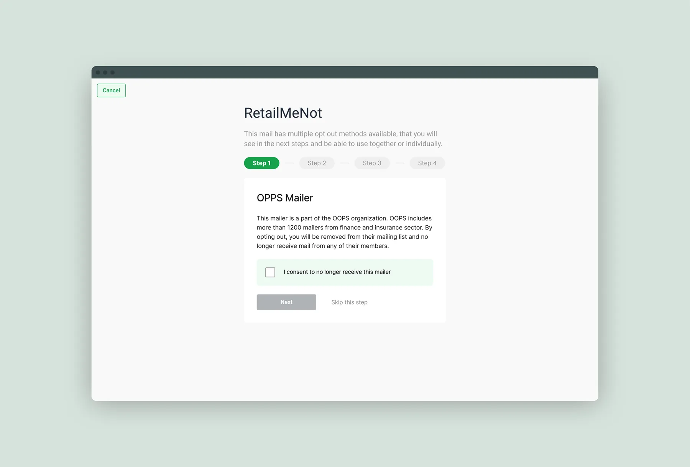
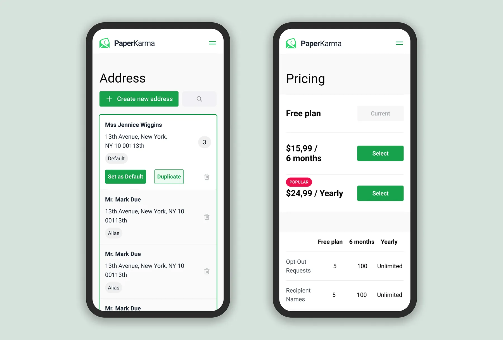

UX/UI Design · Web Application
PaperKarma
PaperKarma helps people stop unwanted physical mail. I redesigned how users create opt-out requests and follow their progress, on desktop and mobile.
Project information
The challenge
Opting out works differently for each sender: some require extra confirmations, some an organisation to be selected, others a special code. After submitting, users also need to know what is happening with their request. The challenge was to support all of these scenarios without making the simple cases complicated.
My approach
I mapped every flow first, from sign-in to account settings, and designed the opt-out as numbered steps that adapt to the sender type, so users only see the steps that apply to them. Each request shows its progress on a status timeline, from created and processed to sent and unsubscribed. Active and archived requests are kept apart, an empty state guides new users to their first request, and destructive actions such as archiving a request or removing a device ask for confirmation.
Designing for many scenarios taught me to start from the flow rather than the screen: once the logic was mapped, the interface could stay simple.
Process
User flows and wireframes
Connected low-fidelity screens covering every key flow, including the different opt-out scenarios.


Final design




